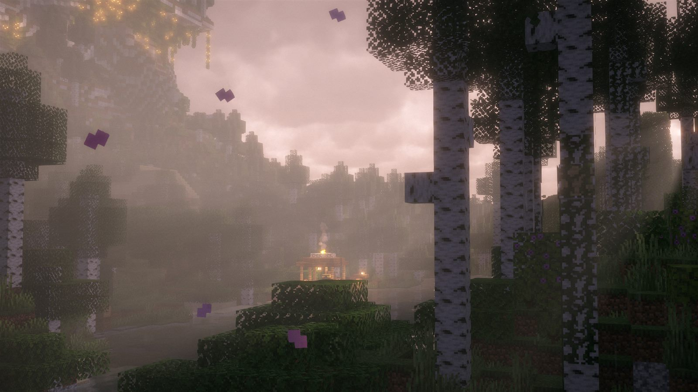
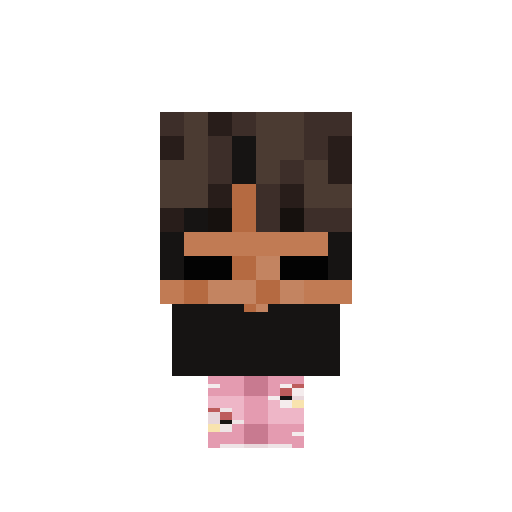
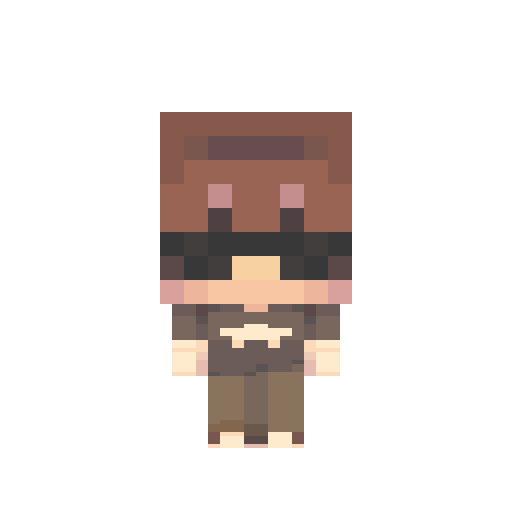

NEXORA1.21.4
✦YOUR NEXT WORLD
INICIAR JUEGO ↗
01 / EL CLIENTEUna entrada
Una entrada
hecha para ti.
Un inicio limpio para tus versiones, tus perfiles y tus mundos favoritos.

NEXORA LAUNCHER V0.29 BETA
El inicio de algo más grande.
Juega. Descubre. Pertenece.
MÁS QUE UN LAUNCHER
NEXORA está creando un lugar donde el juego y la comunidad se encuentran. Un launcher con carácter, una puerta a nuevos servidores y un espacio para que cada jugador encuentre su manera de vivir Minecraft.
HECHO POR JUGADORES, PARA JUGADORES.Todo parte de una idea simple:
que entrar a jugar se sienta especial.
Un inicio limpio para tus versiones, tus perfiles y tus mundos favoritos.
Descubre servidores y encuentra gente con quien jugar.
Una plataforma que crece junto a las personas que la hacen suya.
Capturas reales del launcher
muy pronto.
Encuentra herramientas,
ideas y gente para jugar.
Un espacio preparado para descubrir mods de rendimiento, construcción y nuevas formas de jugar.
MODRINTH · CATÁLOGO DISPONIBLEPrepara tu servidor con herramientas, experiencias y plugins elegidos para tu comunidad.
CATÁLOGO EN PREPARACIÓNExplora servidores Java y Bedrock por modalidad, versión y estilo de juego.
DIRECTORIO NEXORANEXORA Launcher v0.29 Beta está en preparación.
Muy pronto podrás descargarlo e iniciar tu aventura.
Construimos NEXORA paso a paso,
con la comunidad en mente.


NEXORA es para quienes siempre encuentran una razón más para volver a jugar.
— ELMANXY & SPIRLOZEstamos preparando los canales de NEXORA.
Muy pronto compartiremos novedades, avances y la beta.
NEXORA · SERVIDORES
Comunidades nuevas, aventuras infinitas.
Los datos de jugadores y estado se mostrarán cuando NEXORA conecte una API. No se inventan cifras ni estados de conexión.
TU RECORRIDO
Aún no hay partidas registradas esta semana.
Las sesiones aparecen aquí cuando el launcher NEXORA comparte tu actividad.
MODRINTH · MODS Y CONTENIDO
Busca mods, modpacks, shaders y resource packs para Minecraft.
Descarga archivos oficiales desde las fichas. La instalación automática y las dependencias se conectarán al launcher.
TU IDENTIDAD
Elige cómo te ve la comunidad y organiza tus skins.
Tu perfil y tus skins se guardan en este dispositivo.
VISTA PREVIA 3D
La skin de NEXORA aparece equipada desde el inicio. Sube la tuya y agrega capa, élitros y armadura.
Escoge un avatar para tu cuenta.
Sube texturas PNG de Minecraft (64×64 o 64×32).
Se guardarán en este navegador. Puedes cargar varias y elegir cuál dejar activa.
TU PRÓXIMA AVENTURA
Encuentra un servidor, descubre mods y sigue tu progreso.
Explora comunidades Java y Bedrock por modalidad y versión.
DIRECTORIO NEXORABusca mods, modpacks, shaders y contenido para Minecraft.
CATÁLOGO MODRINTHRevisa tus sesiones recientes y el tiempo que llevas jugando.
TU PROGRESO DE JUEGOA TU MANERA
Pequeños detalles para que NEXORA se sienta tuyo.
Controla cómo responde la interfaz.
NEXORA Launcher v0.29 Beta
Un launcher y espacio comunitario para descubrir Minecraft de una forma más personal. Esta preview incluye el directorio visual de servidores; la consulta en vivo y los servicios de cuenta se conectarán después.
QUIÉNES ESTAMOS DETRÁS
Conoce al equipo responsable de la identidad visual y el desarrollo tecnológico de NEXORA.

✦OWNER · DISEÑO Y DESARROLLO WEB
Identidad visual · Diseño de producto · Experiencia de usuario
Responsable del diseño y desarrollo web de NEXORA. Construye la identidad visual y define la experiencia de usuario de la plataforma, dirigiendo la línea estética, la interfaz, la estructura y la presentación de cada apartado para que todo se sienta moderno, claro e intuitivo.

✧OWNER · DESARROLLO DE SOFTWARE
Launcher · Cliente de Minecraft · Ingeniería de software
Responsable del desarrollo tecnológico de NEXORA. Diseña y programa el launcher y su cliente de Minecraft, además de las herramientas que forman el núcleo del proyecto, cuidando su funcionamiento, rendimiento, estabilidad y experiencia de uso.
“NEXORA es nuestro proyecto en común. Queremos que cada jugador encuentre un mundo que sienta suyo.”
ELMANXY & SPIRLOZ